| 日付 | 2017年1月14日（土） - 2017年1月15日（日） |
|---|---|
| メンバー | 家族（妻、長女・5歳、長男・3歳） |
| アクセス | 車 |
この歳になって初めてスキーに挑戦する。
前々からやってみたいと思っていて、
昨年の冬に安くなったスキーウェアを買い、準備を進めていた。
生憎、大寒波がやってくるという天気予報だったが、
立地条件から問題はないと判断し、スノータイヤで現地に向かう。
1日目
池の平スノーパークに到着。
昼食をとって、着替えを済ませ、道具を借りて、ようやく準備が整う。
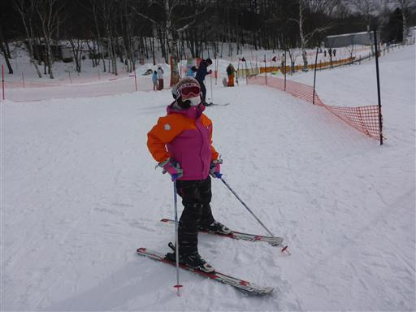
右も左も分からないため、まずは親子でレッスンを受ける。
娘が一人でキッズレッスンに入るのを嫌がったため、親子でレッスンを受けたのだが、
呑み込みの速さに差がありすぎるため、親子レッスンは結構やりにくい…
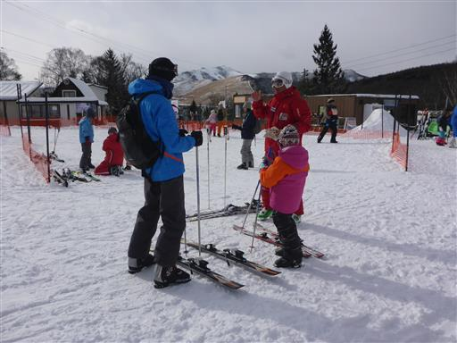
息子はまだスキーには早いため、妻と別行動。
雪の上に設置された遊具で遊ぶ。
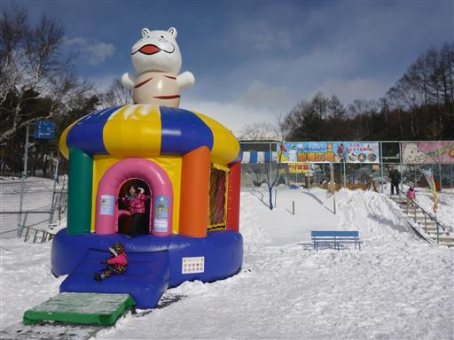
小さな動物園(?)もある。しかし、アザラシも息子も退屈そうだ…
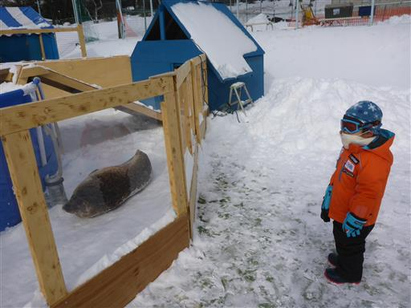
周囲を散策。ファミリー向けのスキー場のため、遊具やそりなどが揃っているのだが、
息子はどうも気乗りしないようだ。
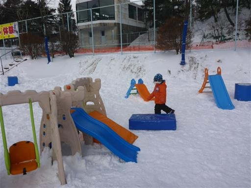
スキー場のリフトの側にある小スペースで練習を行う。
まずはスキー板をハの字に開いて滑る練習と、停まる練習だ。

娘は1時間のレッスンを終えたら死にそうな顔をしていた…
妻と子供たちは一足先にホテルの部屋に入る。
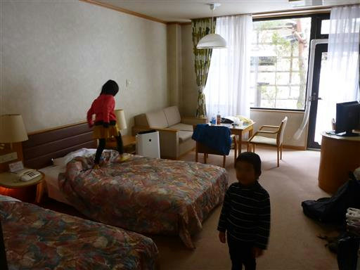
夕食はバイキング。種類は豊富だが、質より量という感じだ。
まあバイキングなので仕方がないが…。子供たちはそれなりに喜んでいた。
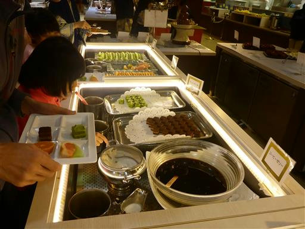
2日目
2日目も1時間プライベートレッスンを受けて、その後は自主練習。
停まり方と曲がり方を教わったので、とりあえずこの小さなスキー場であれば
どのコースでも滑れるようになった。
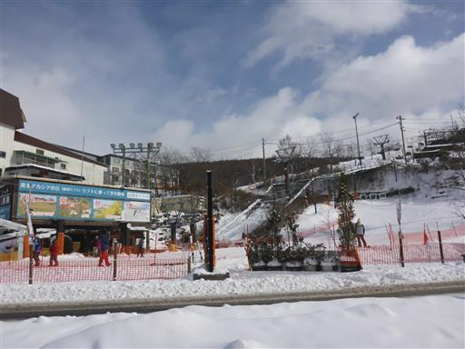
娘は1日目で嫌になったらしく、2日目からは別行動。
ホテルにあるプールで遊ぶ。
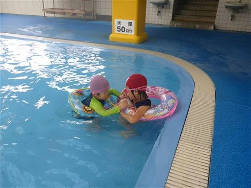
ホテル内のプールなのにウォータースライダーがある。
それなりに高いホテルだけに設備は整っている。
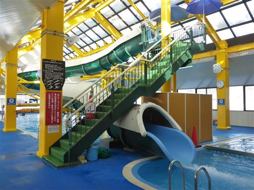
白樺湖を見学。湖は凍り付いている。
気温は-10℃で非常に寒い。寒波が来ているだけのことはある。
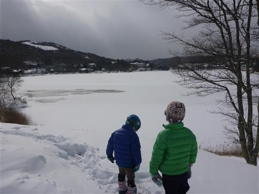
周囲を散策。少し雪と戯れる。
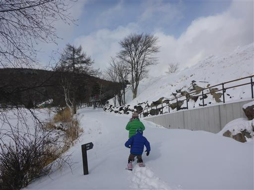
2時ごろに集合し、お世話になったホテルを後にする。
雪に囲まれた露天風呂や大きなレストランなど、思い出に残るホテルだった。
娘は寒いのが嫌だったようで、スキー再挑戦は来年になりそうだ。
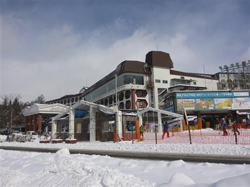